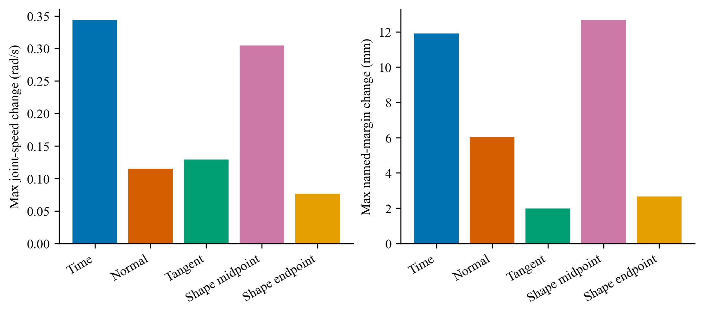
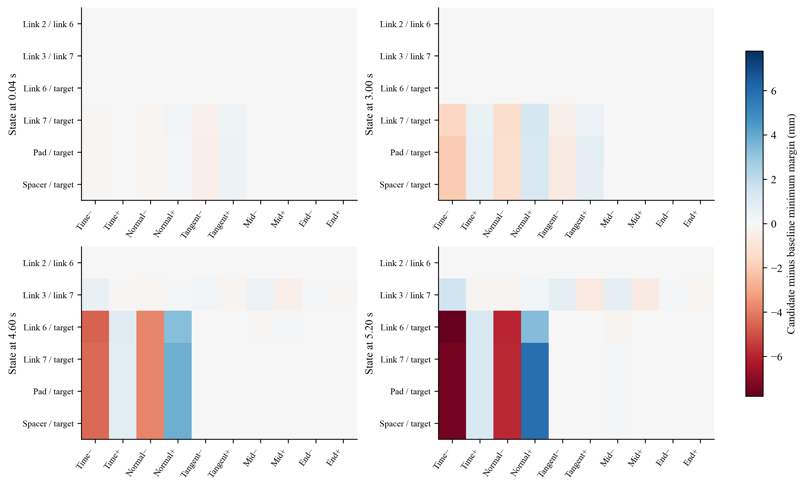
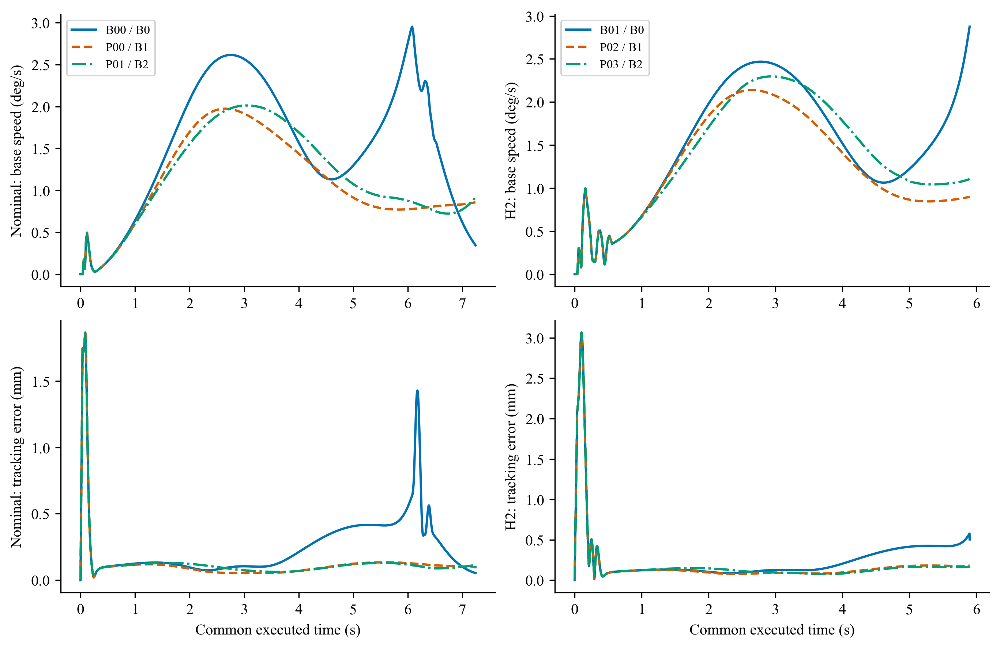
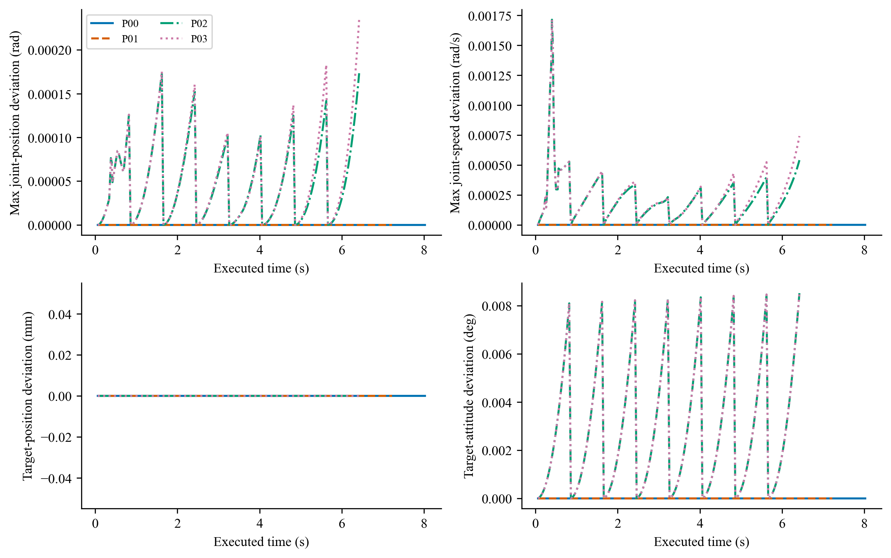

理想 SensorPacket + 冻结 CA18。非理想测量 NOT_ADMITTED；非实时仿真。失败前缀不代表完整任务收益。
B2名义：NOT_ADMITTED；H2：NOT_ADMITTED；双重放：PASS。
| 运行 | 状态 | 实际终止(s) | 完整消旋合格 |
|---|---|---|---|
| B00 | COMPLETED | 27.914 | True |
| B01 | NO_VERIFIED_CONTROL | 5.900 | False |
| D00 | IMPLEMENTATION_ERROR | 6.440 | False |
| D00_R1 | PREDICTION_REJECTED | 7.240 | False |
| D01 | PREDICTION_REJECTED | 6.440 | False |
| P00 | PREDICTION_REJECTED | 8.040 | False |
| P01 | PREDICTION_REJECTED | 7.240 | False |
| P02 | PREDICTION_REJECTED | 6.440 | False |
| P03 | PREDICTION_REJECTED | 6.440 | False |

同状态候选改变关节动作与命名裕量，不能据此认定完整捕获成功。

Signed changes for six named pairs at four preregistered B01 states, each using the same 0.6 s prior forecast. Columns change one dimension with its negative/positive perturbation. Positive means increased predicted minimum distance, not task success. All finite pairs and thresholds are in authority_signed_margins.csv; absent-distance sentinels are excluded.
PDF
B0/B1/B2 actual base angular speed and active-reference tracking error, truncated to the shortest executed interval in each scene. This figure excludes later baseline capture and does not establish complete-task benefit, risk reduction or postgrasp performance. Runs are deterministic seen-condition comparisons, not independent statistical samples.
PDF
Public joint measurements and CA18 target estimates against the selected independent-prior cached forecast at actual cache-validation ticks. Traces end at the last cache check before termination (P00/P01/P02/P03: 8.02/7.22/6.42/6.42 s). Replanning resets the forecast horizon. These are cache-domain diagnostics, not a global prediction error guarantee; truth is not fed to the planner.
PDF